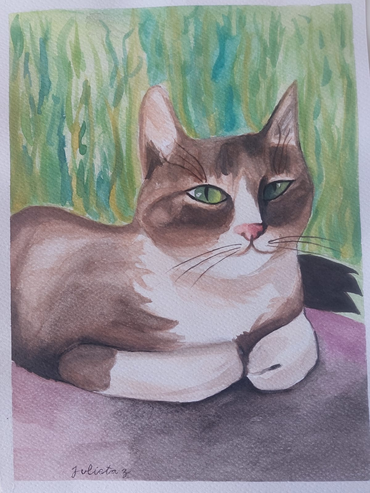
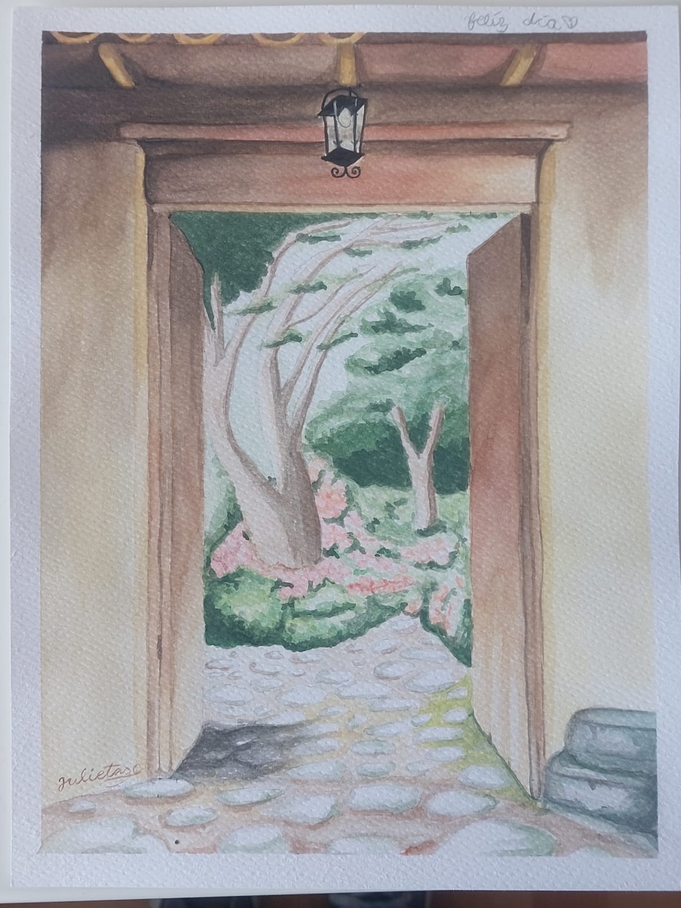
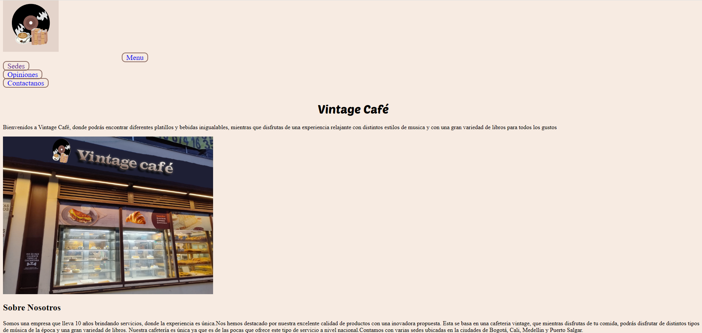

Proyectos de arte
Mi pintura de gato fue la primera que hice en mis clases de arte, utilicé varias tecnicas con acuarela e implementé materiales como el acrilico.
Mi pintura de esta puerta dando hacia un jardín la hice con el propósito de mejorar en los detalles con acuarela, aprendí a manejar tonos oscuros y a generar luces.
Proyectos escolares
Esta página web la estamos creando con dos de mis amigas, es acerca de una panadería y fué uno de nuestros primeros intentos en utilizar html.